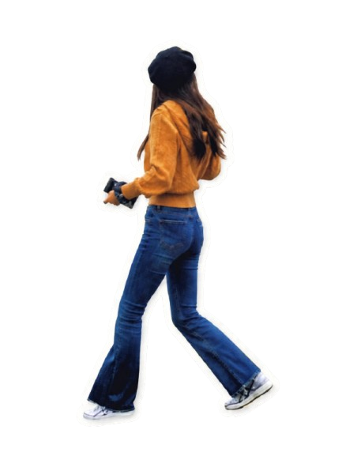

Freshly Baked
作品展示
这里将展示视频创作、内容运营、活动项目和未来的 AI 尝试。
Secret Recipes
烘焙秘方
音乐、旅行、影视、生活片段和最近感兴趣的事，会慢慢收藏在这里。
Find Me
联系方式
欢迎通过下面的公开渠道找到我。
甜品照片占位：assets/images/contact/contact-dessert.jpg
Maybe we could be slow dancing